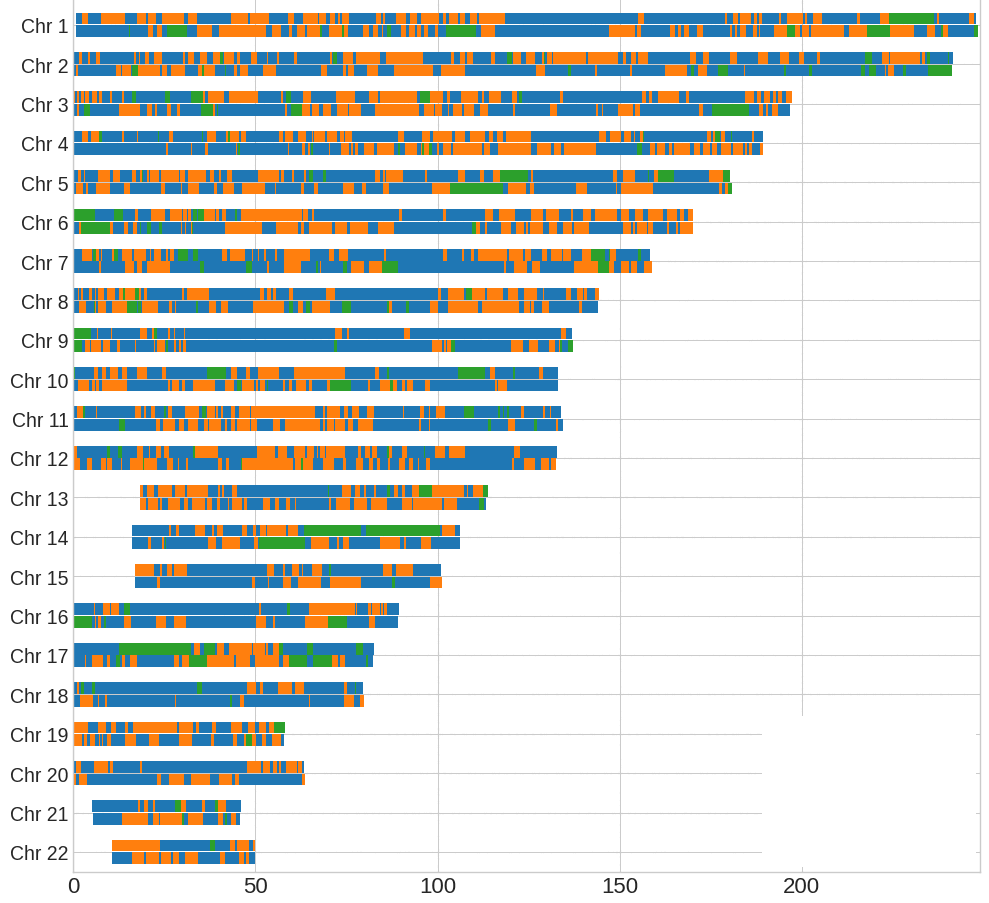

HyenaLAI: Local Ancestry Inference from Positional Individual's Variation
A single end-to-end model for local ancestry inference from SNPs, built on the subquadratic HyenaDNA architecture with Factorized Positional Embeddings. No reference panel or genetic map. Ancestry turns out to be encoded mostly in which positions vary: positions alone reach 94% accuracy at 1,024 SNPs.
BibTeX
@inproceedings{cameto2026hyenalai,
title = {HyenaLAI: Local Ancestry Inference from Positional
Individual's Variation},
author = {Cameto, Gonzalo and Fariello, Mar{\'i}a In{\'e}s
and Lecumberry, Federico},
booktitle = {Progress in Pattern Recognition, Image Analysis,
Computer Vision, and Applications (CIARP 2026)},
series = {Lecture Notes in Computer Science},
publisher = {Springer},
year = {2026}
}
